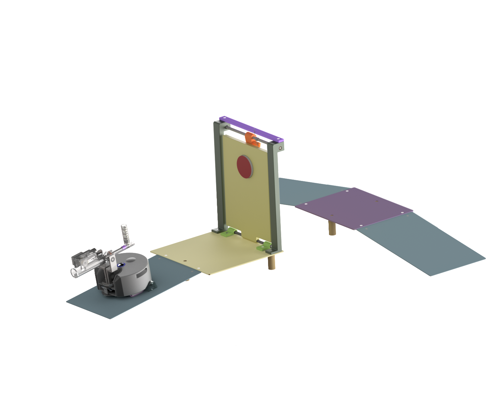
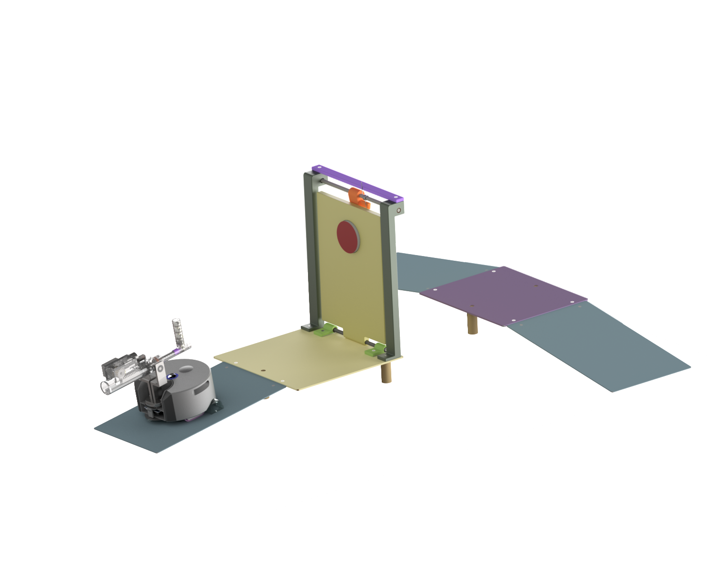

My GBDP involved the adaptation of Dyson 360 eye robot vacuum cleaner to allow it to be
used as an educational and learning tool for schools, outreach events and
CPD courses. The system was broken down into various subsubsections formed
of attachments to the robot, environmental surroundings and lesson support resources.
A large variety of designs for obstacles were created and their interactions with the
robot with the attachment were examined. From this, the top three ideas were developed
as concepts to be prototyped and tested. Investigation into the strengths and weaknesses
of each obstacle system was carried out along with a discussion about the feasibility of each.


Three feasible obstacles were selected as shown in the second image above, these include
a ramp to lowering plaform which could be used to demonstrate the effect of spring stiffness
on the compression of the springs and the displacement of the platform with the robot mounted on it.
The second concept developed was a shooter knocked drawbridge obstacle for the robot. For this,
the robot would be fitted with a projectile launcher attachment designed by another team member, this
design would allow students to make numerous attempts at changing the projectile launch angle to
hit the target and ideally learn about projectiles and suvat equations within their lessons.

 



The final obstacle designed was an object triggered door, this concept makes use of the dyson with the grabber attachment fitted. The obstacle contains an encased magnet 'trigger' mechanism which is linked to a slider, once the slider is lowered the door opens due to the torsion spring fitted. From this exercise, the students are to learn about the equation for density using 3 different objects made from foam, plastic and aluminium. The aluminium cube is the only one of sufficient mass to overcome the mechanisms magnet force to open the door.